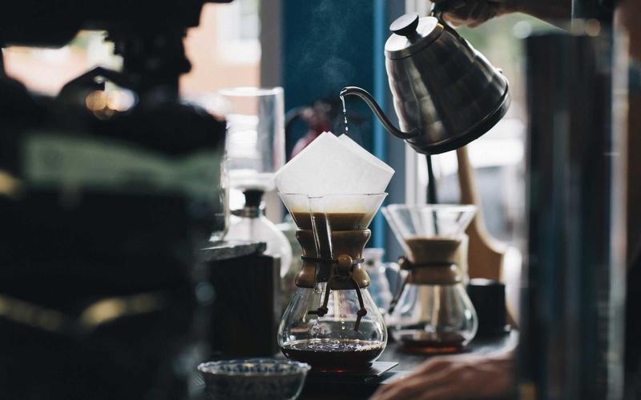

Halden 0.8 L brewer
Borosilicate and steel
€ 48.00
About these photographs. The Halden brewer is invented, so the four frames above are stock photographs of similar objects and of a shop, credited in each caption and in the README. They are not four views of one product.
Brewing · glass and steel
A straight-sided borosilicate body, a steel collar and a lid that does not drip. Brewed at the bench, poured without a paper filter.
Example shop: nothing can be bought, and no payment or order is possible.
Six made-up products with made-up prices. The two filters below are complete form controls before any script runs: a native <select> that becomes a searchable listbox, and an input with a <datalist> that becomes a filtered combobox. Neither of them filters the cards: this page has no catalogue behind it to filter.
Borosilicate and steel
€ 48.00

Stainless steel, narrow spout
€ 62.00
Stoneware, 180 ml
€ 24.00

Beech, oiled, 45 × 30 cm
€ 39.00
Stoneware, 14 cm
€ 18.00
Cotton canvas, four colours
€ 54.00
The page links return to the top of this section.